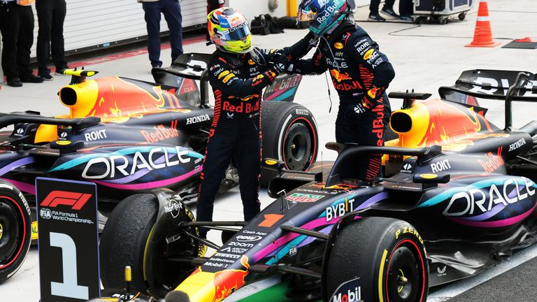
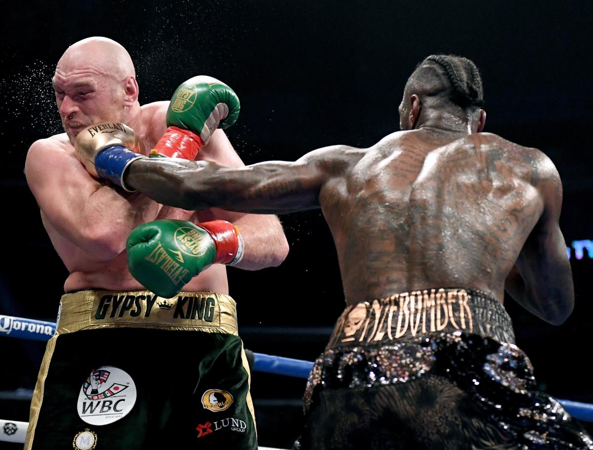

K.W Florian Resume
Summary
Je me considere comme quelqu'un de fiable
et d'qutonome, Je suis ponctuel et precis,
mais qui apprecie egalement de travailler en
equipe. Je suis convaincu de pouvoir vous
etre utile et pour vous en assurer, je maîtrise
des outils informatiques.J'ai également de
bonnes capacités de communication avec les
clients.
Education
- 2010-2013: Université de Buea, Cameroun. Diplôme Obtenu : Licence (MBA à l'étranger)
- 2014-2016: Landmark Métropolitain Université de Buea,Cameroun. Diplôme Obtenu: Diplôme National Supérieur (Bac +4) (Digital Marketing)
- 2021 Nov-2022 Jan : AFPA Chartres. Formation FLE-FLI
- 11/03/2021-08/04/2022: AFTRAL Gellainville. CASCE 1A, 1B, 3 et 5
Expriences Professionnelles
Vendeur, Boutique KEN Fashion au Cameroun
2012-2014
- Vente de vêtements pour hommes et femmes
- Utilisez le groupe Facebook pour vendre
Guide Touristique et Agent de Voyage, ECOTREK CAMEROUN
2015-2019
- Organisation de tournée
- Vente de billets d’avion (Avec système Amadeus )
- Compte de réservation [Voitures, Hôtel et Maison d’hôtes]
- Facebook Ads,Instagram Ads et Google Ads
FUCO Internationale Spedition
2019-2022
- Communications par courriel avec les clients.
- Mener la négociation commerciale jusqu'à la signature.
- l'expédition de pièces automóviles (Mondial)
- Agent Commercial B2B
TELIFRAIS
20/2022-10/2022
- Préparateur de commande
- Gestion des stocks
Competence
- Maîtrise experte de la suite Office (Microsoft 365 Office)
- Administration, gestion et planification des publications sur les sites réseaux sociaux.
- Utilisation des outils de marketing digital comme Google Adwords ou Facebook Ads.
- Compétences en communication.
- Capacité à travailler en équipe.
- Pérenniser la relation client.
Centre D'interest
Formule 1

Boxe

Cuisiner
Contact Me
Lettre de Motivation